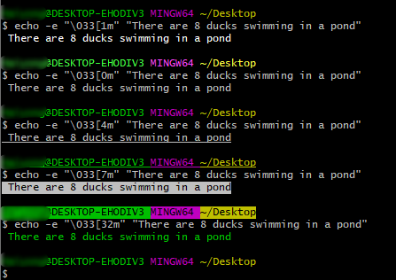

在Linux Bash编程中，介绍了Bash编程基本语法，本文记录一下Bash编程中使用到的相关shell 语法技巧。
字符串处理
在字符串中传递变量
1 | $ num=8 |
tr命令
tr (translate) 命令用于删除或者转换字符，比如大小写转换，删除字符等。命令格式如下：1
$ tr [OPTION] SET1 [SET2]
OPTION参数说明：
-c | --complement：删除或者替换SET1以外的字符-d | --delete：删除SET1以外的字符-s, --squeeze-repeats：压缩连续重复的字符为单个字符-t, --truncate-set1：截取 SET1 使之与 SET2 长度相等
1. 大小写转换
1 | $ echo HELLO WORLD | tr "A-Z" "a-z" |
2. 替换
1 | $ echo "(hello world)" | tr "()" "{}" |
3. 压缩重复字符串
比如可以将多个连续空格压缩为一个空格1
2$ echo "hello world !" | tr -s [:space:] ' '
hello world !
4. 删除指定字符
1 | $ echo "10MB" | tr -d MB |
提取数字还可以这样：1
2
3
4$ echo "10MB" | tr -cd "[0-9]"
10
$ echo "10MB" | tr -cd [:digit:]
10
删除数字：1
2
3
4$ echo "10MB" | tr -d "[0-9]"
MB
$ echo "10MB" | tr -d [:digit:]
MB
字母字符用[:alpha:]表示
判断字符串是否包含某个子串
1、使用通配符*
1 | SIZE=10M |
2、使用操作符~
1 | if [[ $SIZE =~ M ]] |
3、利用grep查找
1 | SIZE=10Mb |
4、利用grep查找，不区分大小写
1 | SIZE=10Mb |
数组操作
冒泡排序
1 |
|
执行结果：
1 | $ sh BubbleSort.sh |
字体颜色
常用颜色格式：1
2
3
4
5
6
7
8
9
10
11
12
13normal='\033[0m' # 默认颜色
style='\033[1m' # 高亮
style='\033[4m' # 添加下划线
style='\033[7m' # 反显
color='\033[32m' # 绿色字体
color='\033[30m' # 黑色
color='\033[31m' # 红色
color='\033[33m' # 黄色
color='\033[34m' # 蓝色
color='\033[35m' # 紫色
color='\033[36m' # 深绿
color='\033[37m' # 白色
使用方法：1
2
3
4
5echo -e "\033[1m" "There are 8 ducks swimming in a pond"
echo -e "\033[0m" "There are 8 ducks swimming in a pond"
echo -e "\033[4m" "There are 8 ducks swimming in a pond"
echo -e "\033[7m" "There are 8 ducks swimming in a pond"
echo -e "\033[32m" "There are 8 ducks swimming in a pond"

文本处理
文件操作
1 | sed -i '/^$/d' test.txt # 删除空行 |
清空文件内容
用于每次写文件时清空文件内容，下面介绍5种方法，前面4种方法中，如果文件不存在会创建文件。
1 | cat /dev/null > test.txt |
本文标题:Linux Bash编程二：shell语法及实用技巧
文章作者:hiyo
文章链接:https://hiyongz.github.io/posts/linux-shell-bash-programing2/
许可协议:本博客文章除特别声明外，均采用CC BY-NC-ND 4.0 许可协议。转载请保留原文链接及作者。